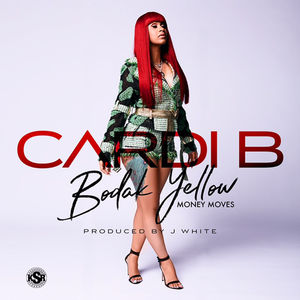
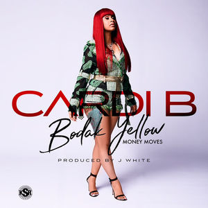
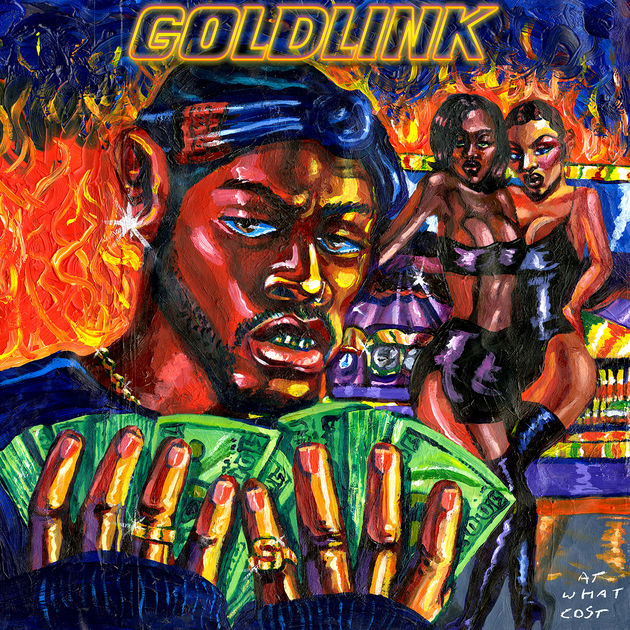
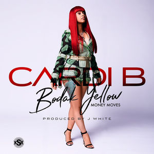

Between these three albums, Brockhampton dropped 12 music videos and 48 songs this year. While I didn’t like all of it, I have to respect the sheer amount of creative output. These guys have been working their asses off all year, and it’s honestly hard to not like them. They’re a ragtag group of guys who met on KTT, each with a unique personality and style. With each iteration, their songwriting and chemistry improve, both as individuals and as a collective.
Sometimes, they all hit the mark on the same track, and the results are sublime. “SWEET” has Dom, their best bar-for-bar rapper, fluidly rapping lines like “Making 'em say "ugh!", they worshipping our force viciously/Watching the floor tip in your temple of authenticity/Often they say I’m off it, I offer my crossed empathy/They forgot what we on, I’ll remind 'em with hostility,“ and Joba, the weirdo of the group, both singing in multiple styles and rapping within sixteen bars. The song is tied together by the slick hook, sung by their leader Kevin Abstract. “BOOGIE” is another example of Brockhampton embracing their eccentricity. It’s a high-energy ride from beginning to end. Merlyn’s bridge, while simple, is a highlight, demonstrating his immense growth as a rapper over the past few months. As they congeal as a unit, their concepts become much more clearly framed without losing any of the spontaneity of their older music.
Brockhampton are ultimately endearing to me because they stand for the redeeming qualities of the internet that I love. Their inspirations are far reaching. They’re a new school Odd Future that’s more tolerant but with the same unbridled creative spirit (not to mention having more than two members that I care about). Listening to these albums, it’s undeniable — this is the start of something great.
In a thank you note for her fans, Charli XCX wrote “fuck playing the game. Do what you love and be with people who inspire you.” More than advice to aspiring artists, it felt like a personal mantra for her music this year. Her mixtapes feel authentic, not just because of the absence of obvious radio singles but also due to the ambitious aesthetic that she has honed with PC Music founder A.G. Cook. Pop 2 is their best work to date, distilling PC Music’s experimental sounds and Charli XCX’s excellent pop sensibilities into music filled with energy and feeling.
Vocals are looped, chopped, and processed, taking center stage throughout. Despite all of the glitchy futuristic sounds, there’s a vein of raw humanity that makes the choruses and outros soar. The opening verse in “Porsche” includes a cutting remark to her materialistic ex, “One rose, layin' on your grave 'cause/You pushed everyone away, but/My mausoleum, pretty like Versailles/And I played it out, 'bout a thousand times, yeah,” which makes the vindication and joy of the chorus all the more palpable. Repetition is also used to great effect. “Backseat” closes with a beautifully straightforward interpretation of getting lost in music when “all alone, all alone, all alone” is repeated as the thundering beat swallows Charli XCX and Carly Rae Jepsen’s voices. “I Got It” incorporates contemporary rap tropes more fluently than any other pop singer this year with its hypnotizing hook, dripping with autotune. These vocals are the beating heart of the tape. As some of the tracks escalate into unadulterated maximalism, the vocals rise to meet the production. Overflowing with glittering synths and punchy drums, it bursts at its seams, but instead of falling apart into a chaotic mess, these moments are the emotive highlights of the tape. Almost every song has a moment like this, and reaching these peaks is a ride that never gets old.
The title implies that this mixtape is post-pop, and while that might be a bit hyperbolic, it isn’t a complete misnomer. Each song is a bold new take on Charli’s vision for pop in 2017. Charli has already established herself as a bona fide star by topping the charts, but this year, she’s proven that she’s a singular force in pop, pushing the frontiers of the genre.
When Drake rapped “Give these niggas the look, the verse, and even the hook/That’s why every song sound like Drake featuring Drake” on “5AM in Toronto”, it was a masterclass in braggadocio — how could anyone deny it? Since then it’s only become more relevant, with Drake running pretty much everything in music from radio to streaming and even bar mitzvahs. This rise in commercial success also coincided with a noticeable decline in the quality of his music. Gone were the relatable qualities that made his music so universally appealing and in their place were overly self indulgent tracks that slogged on far too long. Drake seems to have finally realized some of these issues, and More Life is a much needed course correction in his career.
Most importantly, it’s obvious that Drake is having fun with his music again. Goofy lines like “And more chune for your headtop/So watch how you speak on my name, you know?” and the exaggerated enunciation of “kicker” in “Gyalchester” are welcome returns to pre-2016 Drake. These quirks have always been cringeworthy, but they’re also some of the most memorable and worthwhile parts of Drake’s music. Part of Drake’s talent as a pop songwriter is his ability to create these moments that begin as jokes or memes but gradually become cultural keystones.
But that isn’t to say that More Life is a step back for Drake. Building upon many of the sounds that he’s been cultivating, it’s a compelling argument that he’s a world class tastemaker. “Passionfruit” incorporates dancehall and house, even sampling Detroit legend Moodymann, and paired with his voice, it has a timeless vibe. South African house music makes its first appearance in Drake’s music via “Get It Together,” and in classic Drake fashion, he swoops in after Jorja Smith’s intro and steals the show. His roots in the UK further deepen, with collaborations with grime MCs (Skepta and Giggs) as well as up-and-coming singers (Jorja Smith and Sampha). Lastly, he jumps on the hottest American trends, jacking XXXTentacion’s “Look at Me” flow and working with Atlanta producers and rappers. The fact that the playlist features so many different styles yet still feels cohesive is an achievement. Drake is very discerning when it comes to finding that cohesion in his projects. He remains the star of his own show, while naturally incorporating other sounds to expand his aesthetic.
It may be a bit too long and certainly has some duds, but this “playlist” was one of my most enjoyable listens of the year. I think we’re all better off if we take Drake a little less seriously (“I don’t take naps” was probably the funniest moment in music for me this year), and More Life indicates that Drake himself agrees.
If HNDRXX is the next step for Future, his fittingly self-titled album is the conclusion of a legendary genre-defining run of mixtapes and albums. Since Monster, cynics could say that Future has been rehashing the same style of music. But what has really happened is a refinement and evolution of a sound that Future pioneered. His sung-rap delivery introduced melodies and flows that now dominate radio rap, and it’s no exaggeration to claim that most rappers on the radio are trying, in some way, to imitate Future.
No one can match Future’s mastery at his craft over the production provided by his usual all star cast of Atlanta producers. He can rap at an intense pace, like on “POA,” to the point that verses and hooks seamlessly blend together into a non stop barrage of bars. At other times, his flows are more relaxed but still expertly measured. Inferior rappers struggle to come up with a single flow as good as the handful that he juggles on “Poppin’ Tags,” and the now iconic “Mask Off” is a classic Future song through and through. There’s some slight experimentation on tracks like “I’m so Groovy,” but for the most part, he sticks to tried and true styles throughout. That isn’t to say that it’s boring though — he’s still reaching and surpassing the highs of his previous work.
At a time when rappers like Waka Flocka Flame ran Atlanta rap, Future innovated and started a movement that changed the whole scene. Future’s sound has become so ubiquitous that it’s synonymous with rap itself to the layman fan of the genre. Listening to this album is like watching LeBron get a triple double. It may seem routine, but that’s only possible because we have become accustomed to excellence.
To just call Kendrick Lamar a great MC is reductive. If you strip away his brilliant storytelling and thought provoking ruminations about life, you’re still left with a breathtaking display of pure rapping ability (I imagine this is what it’s like to be an international fan of Kendrick without knowing English), but it’s everything else he brings to the table that makes him undoubtedly one of the best of all time. What makes Kendrick a transcendent talent is not simply his skill or technique, it’s an ability to effortlessly amaze as a writer, performer, and rapper. Where less capable rappers’ “lyrical miracle” raps hardly amount to much more than tedium and posturing, Kendrick makes music that’s fun, thrilling, and evocative.
DAMN. taps into this while also managing to be his most accessible work thus far. The tracks with Mike Will are mind blowing displays of flow and lyricism, keeping up a frenetic pace with bars like “I was born like this, since one like this, immaculate conception/I transform like this, perform like this, was Yeshua new weapon“ that are at once badass and cerebral. If there were any doubts about Kendrick’s radio appeal after To Pimp a Butterfly, “LOYALTY” and “LOVE” lay them to rest. They’re his most straightforward radio singles in recent years and affirm that he has sharpened his pop songwriting ability. The greatest accomplishment of this album, however, is how he adeptly touches on so many topics, ranging from religion to love, with nuance and compassion. This is what makes Kendrick one of the greats; he explores the full range of emotions that rap music conjures while also putting on performances that compete with the all time greats of the genre. Kendrick has often been called the king of rap, and now that he has rejoined the mainstream rap scene, it’s undeniable. He is the greatest rapper alive, and to be honest, no one is even close.
Describing his creative process in an interview with Zane Lowe, Lil Uzi Vert said “I'm not thinking right now. There's nothing to really think about. Everything right now is all about being effortless. I'm in a mode right now. Let's do it. Whatever happens, happens.” This perspective explains pretty much all of his music up to this point. His songs are often not fully formed thoughts, but they usually touch on something unique, whether it’s a melody, flow, or idea, which is stretched into a whole song. It’s not meticulously planned out. Whatever comes to him in the moment becomes a song. When that core of the song is compelling enough though, it can make for great music.
None of the other music he dropped this year reaches the highs of “XO Tour Llif3,” but there are plenty of good tracks in Luv Is Rage 1.5/2. “LUV SCARS K.o 1600” has a hook that would have been a hit had it not dropped alongside “XO Tour Llif3.” “Sauce It Up” and “X” are the kind of songs that initially propelled him to fame, and that carefree, fun attitude shines through as brightly as ever. Similarly, “Neon Guts” is a fun romp with Pharrell, stepping outside of his usual comfort zone of beats. The most interesting development in 2017 though, ties back to the tone he struck on “XO Tour Llif3.” “The Way Life Goes” interpolates an Oh Wonder song, of all things, and he pulls off the somber tone very well (as opposed to Nicki Minaj’s terrible verse on the remix). He approaches more serious subject matter on “Dark Queen,” singing about his mother, and while a bit heavy handed, it’s one of his most heartfelt songs ever. His songwriting may not be the sharpest, but he’s gifted at communicating his emotions through his music. By further increasing the scope of his perspective, he can take better advantage of this.
Uzi seems to have found his voice as an artist, moving far beyond a simple hybridization of pop punk and Atlanta rap. He continues to be an open book in his music, but there’s more on his mind now than just having fun. It’s an intriguing change that has already led to the best music of his career and will almost certainly bring us even better music in the future.
Smino’s music is barely informed by contemporary trends, and its laid back attitude is a welcome change of pace from the frenetic pace and histrionics of Soundcloud rap. blkswn, his debut album, is the most complete project in Smino’s burgeoning discography. Monte Booker is behind the boards, handling production for every song. His unique, understated basslines and bouncy drums perfectly complement Smino’s voice, using his singsong rapidfire flows to seamlessly switch between singing and rapping. Songs like “Netflix & Dusse,” are mundane in subject matter, but in a way that feels intimate and real. Smino takes his time, rapping his standout verse, an impressive display of vocal acrobatics, before smoothly crooning and scatting his way out on an extended outro. “Anita” has the same sincerity on display as he croons “Anita/I need her.” Wordplay like that would feel corny with anyone less genuine than Smino. It’s this sincerity that makes the project shine. Every song radiates warmth and his passion for music and the women in his life is so brazen that it’s truly charming.
I would be remiss to talk about rap music in 2017 without mentioning at least one of these solo producer mixtapes or albums. Without Warning was the best of them, even including 4:44. 21 Savage, Offset, and Metro Boomin were three of the biggest names in rap this year. With each of them in the midst of their prime, the collective star power on this tape made it feel like a whole mixtape of DJ Khaled’s star-studded singles, but in this case, it’s more authentic to these artists’ styles — and actually good.
The mixtape succeeds because Metro takes advantage of the medium better than anyone else. He doesn’t have any huge variations in his sound, but he has excellent taste when it comes to tailoring beats for rappers. The beats have so much open space, which plays to both of the rappers’ strengths. Building upon Metro and 21’s existing chemistry, the production offers haunting moods for 21 Savage’s fatalistic raps, more reminiscent of Savage Mode than Issa Album, and Offset uses the same space to craft his best in class rap hooks accompanied, of course, by his also best in class ad libs. It may not be risky or adventurous, but hearing these guys work their magic at the top of their game is endlessly satisfying.
Tyler, the Creator’s continued use of gay slurs in Cherry Bomb felt strange for someone who was otherwise so culturally savvy. His coming out, via this album, adds some incredibly important context. His effort to reclaim the power of the word was a genuine and personal struggle, not just a childish deflection. I can’t relate to being part of such a marginalized group or being so publicly visible, but I can certainly relate to how this can emerge from a place of pain and insecurity. If anything, the fact that Tyler didn’t feel comfortable until now to come out is (yet another) condemnation of hyper-masculine hip hop culture. Now that he finally can begin to move past this, his music has never been so personal.
Instead of the obscenity and trolling that dominated his past albums, Flower Boy is driven by a deeply reflective narrative. On “Where This Flower Blooms,” he opens up about his struggles with expectations and gender roles for black men, rapping “Tell these black kids they could be who they are/Dye your hair blue, shit, I'll do it too/Look, I smell like Chanel/I never mall grip with my manicured nails.” For someone who appeared so free spirited, it suddenly comes into focus that he was hiding a painful and lonely struggle from his fans and the rest of the world. His spite is caustic on “Boredom,” “I've been in this fuckin' room so long/My eyeballs are turning to dry wall/My friends suck, fuck 'em, I'm over 'em.” Tyler has had serious tracks in the past, but Flower Boy brings a conversational tone and personal touch that lead to the best raps of his career.
The production is also a marked improvement over his past work. The core elements of his sonic palette haven’t changed much, but the music is more refined. Pianos and guitars play large roles in the composition, driving the moody chord progressions that he’s always loved. The buzzing synths, inspired by the Neptunes, return as well, but they are used more sparingly, making them more impactful on the bangers of the album like “Who Dat Boy?” To tie it all together, his arrangement skills are standout throughout, using his eclectic set of drums and fully capitalizing on the widely varied features.
In a year that will likely be remembered for a nationwide resurgence of intolerance, it’s nice know that Tyler is in a good enough place in his life that he could make this album. Tyler, the Creator, as an iconoclast and champion of teenage angst, was an innovator who forever changed pop culture, but now I’m looking forward to getting to know the real person behind that persona.
“Bodak Yellow” fucking slaps. Cardi B exudes so much self confidence and swagger that it’s contagious. It’s common to say that a hit single births a star, but if anything, “Bodak Yellow” just shows the world that Cardi B was already a force of nature. We just needed to take notice. The flow may not be original, but this far supasses “No Flockin” and anything that Kodak Black will make for the rest of his career. In a year with so much uncertainty, this life-affirming banger is a welcome reprieve from the bullshit.
The success of “Crew” is one of my favorite feel good stories of the year in music. It’s fitting that Goldink’s breakthrough single is an ode to DC and the DMV, a region that’s he’s been repping since his first mixtape. Goldlink has a tendency to force his rapidfire flow, but he thankfully exercises some restraint of this track, acquiescing to the beat. The features are great as well. Brent Faiyaz’s smooth hook is a perfect match to the woozy beat, and Shy Glizzy brings some panache with his vibrant verse. After climbing DC’s charts, it has become the biggest hit of their careers. It’s a huge win for the DC scene and hopefully, the next step is a Grammy.
The word “labyrinth” tends to arouse claustrophobia, feelings of helplessness and a struggle to escape. This song flips that feeling on its head. It’s grand and cosmic, drawing you into a trance. As Hikari Mitsushima’s lone voice soars above the rest, singing “It pulls you in/a paradise in the labyrinth/there’s no exit or end/I want to be wrapped inside,” it feels dramatic, hopeful, and ephemeral. Trapped in a reverie as beautiful as this, why would you want to escape?
Neon Bunny is one of my favorite Korean indie artists because of her ability to create vast dreamy atmosphere with the intimacy of bedroom pop. “Now” finds her returning to the same style but with some notable improvements. The tri-lingual verses set a longing and yearning mood before the chorus hits, her take on a collision of Soulection’s Future Bounce and Porter Robinson’s vocals. It’s a modernization and streamlining of her sound that breathes new life into an already awesome aesthetic.